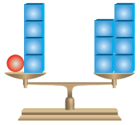
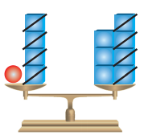
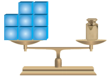
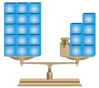

Persamaan Linier Satu Variabel
Contoh Soal
- Silahkan baca terlebih dahulu penyajian masalah pada tabel!
- Setelah menbaca tekan tombol "lanjut", untuk mengetahui pembahasan selanjutnya
1. Tentukan selesaian dari persamaaan berikut
x + 4 = 7
Penyelesaian :
x + 4 = 7
| Penyajian masalah menggunakan timbangan | Penyajian masalah menggunakan Persamaan |
|---|---|
|

Ada empat beban yang sudah diketahui beratnya dan sebuah bola yang belum diketahui beratnya dilengan kiri timbangan. Semuanya seimbang dengan tujuh beban dilengan kanan timbangan. Berapakah berat satu bola? |
x + 4 = 7 |
|
Ambil empat beban dari setiap lengan  |
Kurangkan 4 di kedua sisi [ekuivalen dengan menambahkan (-4)] x + 4 + (-4) = 7 + (-4) x = 3 |
2. Tentukan selesaian dari persamaaan berikut
8 = x - 7
Penyelesaian :
8 = x - 7
| Penyajian masalah menggunakan timbangan | Penyajian masalah menggunakan Persamaan |
|---|---|
|

Ada delapan beban yang sudah diketahui beratnya dilengan kiri timbangan. Sedangkan lengan disebelah kanan tedapat beban yang kurang dari tujuh. Apakah ada cara lain supaya timbangan menjadi seimbang? |
8 = x - 7 |
|
letakkan tujuh beban dari setiap lengan  |
Tambahkan 7 dikedua sisi 8 + 7 = x -7 +7 15 = x + 0 15 = x |